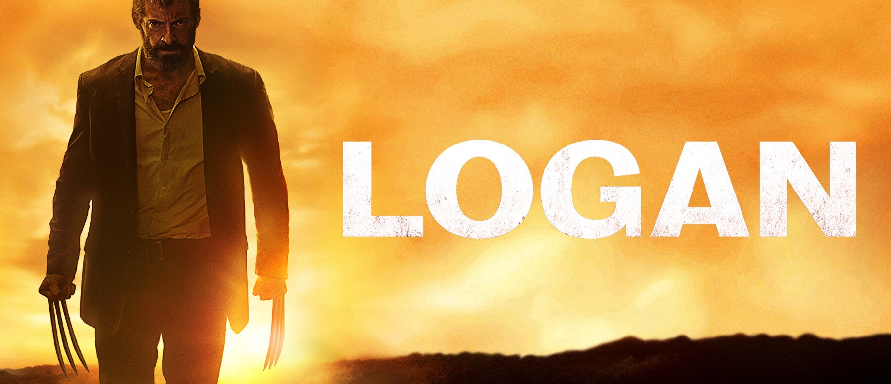
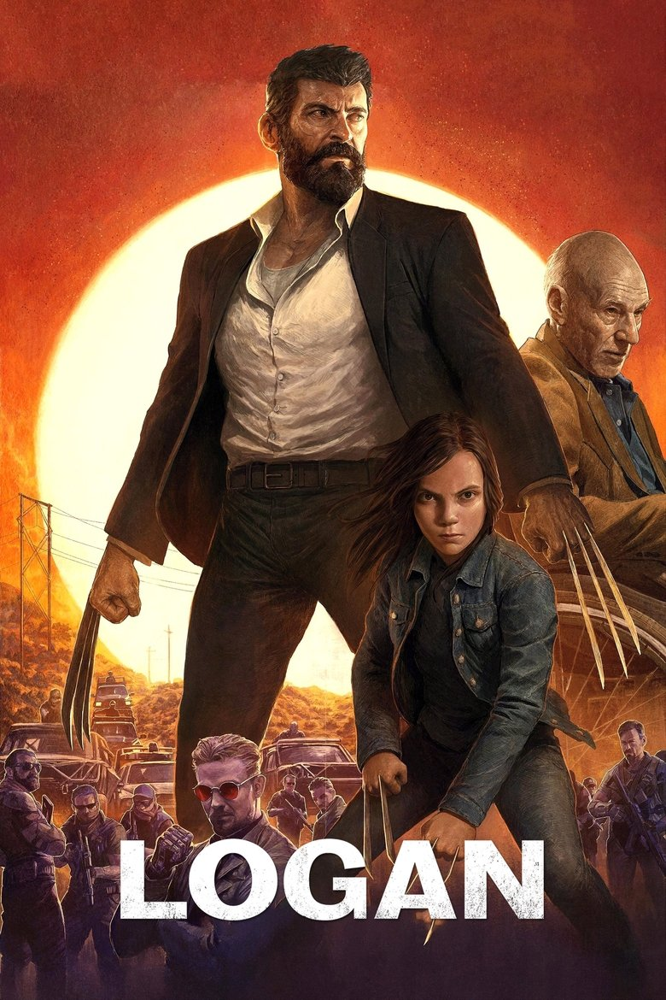

This movie made me understand how character development worked in movies. The beginning we are thrown in world where mutants don't exists anymore but humans have been testing on children to recreate them. Logan is having a hard time living because for how much he has been through he wishes he was dead. He then finds out he has a daughter that her blood which was fused with mutant genes made her have the same powers as he does.
He learns that what they been doing of taking the little girl to hideout spot with other kids that are mutants they are trying to save them before they are killed. Logan starts getting real emotions for the little girl and does start to think her as his own daughter. Towards the end he is close to dying and he can't heal back but sacrifices himself to save the girl. They buried him at the same spot the got ambushed on and this lead to the next movie a few years after these events.